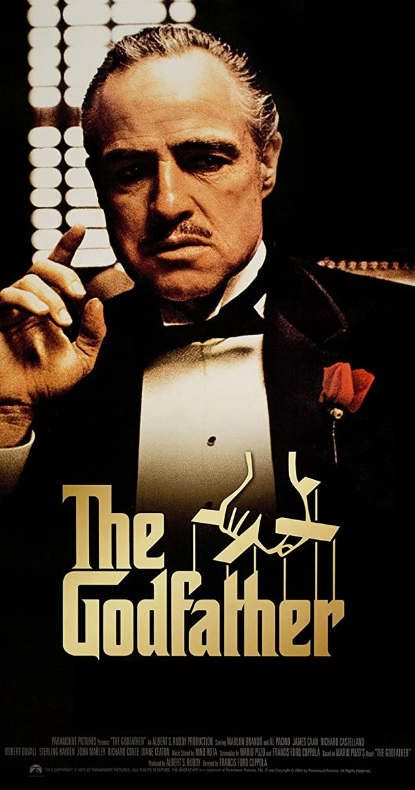

|

|
Plot
In 1945 New York City, Corleone crime family don Vito Corleone
listens to requests during his daughter Connie's wedding to Carlo.
Michael, Vito's youngest son and a former Marine, introduces his
girlfriend, Kay Adams, to his family at the reception. Johnny
Fontane, a popular singer and Vito's godson, seeks Vito's help in
securing a movie role. Vito dispatches his consigliere, Tom Hagen,
to persuade studio head Jack Woltz to give Johnny the part. Woltz
complies after he finds the severed head of his prized stallion in
his bed.
Near Christmas, drug baron Sollozzo asks Vito to invest in his
narcotics business and for protection from the law. Vito declines,
citing that involvement in narcotics would alienate his political
connections. Suspicious of Sollozzo's partnership with the Tattaglia
crime family, Vito sends his enforcer Luca Brasi to meet with the
Tattaglias. Brasi is garroted to death during the meeting. Later,
enforcers gun down Vito and kidnap Hagen. With Corleone's first-born
Sonny now in command, Sollozzo pressures Hagen to persuade Sonny to
accept the narcotics deal. Sonny retaliates for Brasi's death with a
hit on Bruno Tattaglia. Vito survives the shooting and is visited in
the hospital by Michael, who finds him unprotected after NYPD
officers on Sollozzo's payroll cleared out Vito's guards. Michael
thwarts another attempt on his father's life but is beaten by
corrupt police captain Mark McCluskey. Sollozzo and McCluskey
request to meet with Michael and settle the dispute. Michael feigns
interest and agrees to meet, but hatches a plan with Sonny and
Corleone capo Clemenza to kill them and go into hiding. Michael
meets Sollozzo and McCluskey at a Bronx restaurant; after retrieving
a handgun planted into the bathroom by Clemenza, he shoots both men
dead.
Despite a clampdown by the authorities for the killing of a police
captain, the Five Families erupt in open warfare. Michael takes
refuge in Sicily and Fredo, Vito's second son, is sheltered by Moe
Greene in Las Vegas. Sonny publicly attacks and threatens Carlo for
physically abusing Connie. When he abuses her again, Sonny speeds to
their home but is ambushed and murdered by gangsters at a highway
toll booth. In Sicily, Michael meets and marries a local woman,
Apollonia, but she is killed shortly thereafter by a car bomb
intended for him.
Devastated by Sonny's death and tired of war, Vito sets a meeting
with the Five Families. He assures them that he will withdraw his
opposition to their narcotics business and forgo avenging Sonny's
murder. His safety guaranteed, Michael returns home to enter the
family business and marry Kay. Kay gives birth to two children in
the early 1950s. With his father nearing the end of his life and
Fredo not suited to lead, Michael assumes the position of head of
the Corleone family. Vito reveals to Michael that it was Don Barzini
who ordered the hit on Sonny and warns him that Barzini would try to
kill him at a meeting organized by a traitorous Corleone capo. With
Vito's support, Michael relegates Hagen to managing operations in
Las Vegas as he is not a "wartime consigliere". Michael travels to
Las Vegas to buy out Greene's stake in the family's casinos and is
dismayed to see that Fredo is more loyal to Greene than to his own
family.
In 1955, Vito dies of a heart attack. At Vito's funeral, Tessio asks
Michael to meet with Barzini, signaling his betrayal. The meeting is
set for the same day as the baptism of Connie's baby. While Michael
stands at the altar as the child's godfather, Corleone hitmen murder
the dons of the Five Families and Greene, and Tessio is executed for
his treachery. Michael extracts Carlo's confession to playing a part
in Sonny's murder, assuring Carlo he is only being exiled, not
murdered; afterward, Clemenza garrotes Carlo to death. Connie
confronts Michael about Carlo's death while Kay is in the room. Kay
asks Michael if Connie is telling the truth and is relieved when he
denies it. As Kay leaves, capos enter the office and pay reverence
to Michael as "Don Corleone" before closing the door.
|